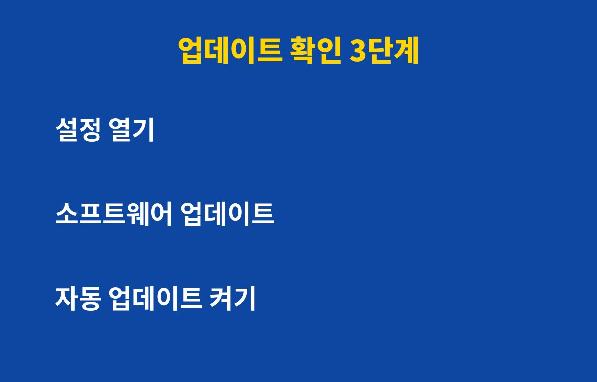
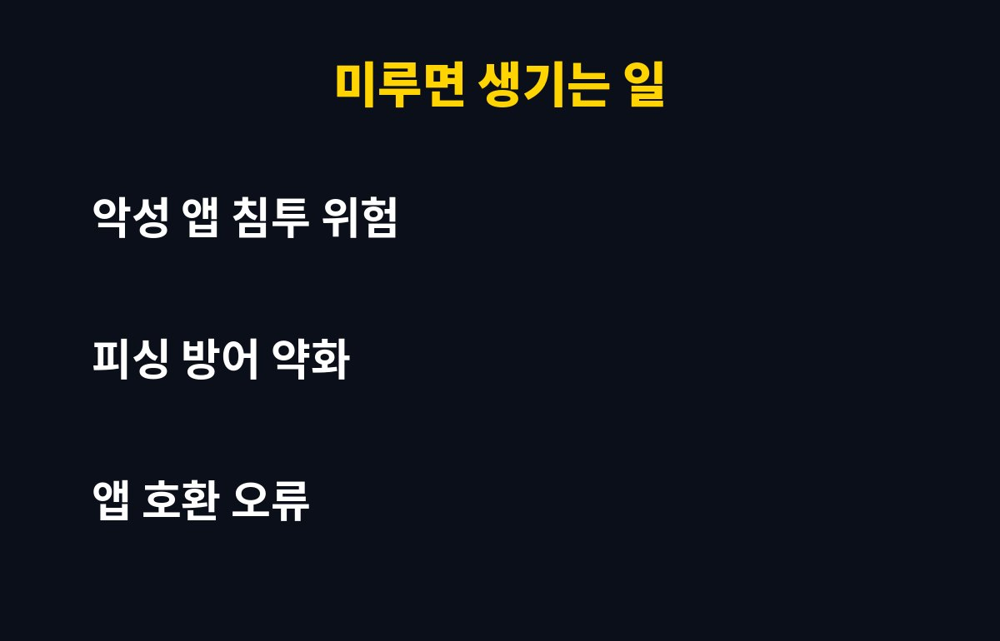

보안 업데이트 알림을 "나중에"로 계속 넘기는 분들, 지금 쓰는 폰이 바로 그 대상이에요. 귀찮아서 미룬 몇 주가 해커에게는 활짝 열린 문일 수 있는데, 어떻게 확인하고 막는지 궁금하지 않으세요?
스마트폰 제조사와 운영체제 회사는 새로운 취약점이 발견될 때마다 보안 패치를 내놓아요. 문제는 패치가 공개되는 순간 그 취약점의 존재도 함께 알려진다는 점이에요.
그러면 나쁜 마음을 먹은 사람들은 "아직 업데이트 안 한 폰"을 노리고 공격을 시도해요. 즉 업데이트를 미루는 동안 내 폰은 이미 약점이 공개된 상태로 돌아다니는 셈이에요.
특히 문자 속 링크, 출처를 알 수 없는 앱, 공용 와이파이처럼 평소 자주 마주치는 경로가 공격 통로가 되기 쉬워요. 은행 앱, 간편결제, 메신저가 모두 들어 있는 폰이라면 더 신경 써야 해요.

방법은 의외로 간단해요. 갤럭시는 설정에서 소프트웨어 업데이트, 아이폰은 설정의 일반에서 소프트웨어 업데이트로 들어가면 돼요.
여기서 "최신 소프트웨어를 사용 중"이라고 나오면 괜찮고, 다운로드 가능한 업데이트가 있다면 바로 설치를 눌러주세요. 설치 중에는 재부팅이 필요하니 충전기를 연결하고 와이파이 환경에서 진행하는 걸 추천해요.
같은 메뉴에서 자동 업데이트도 꼭 켜두세요. 한 번만 설정해두면 이후엔 신경 쓰지 않아도 밤사이에 알아서 챙겨줘요.
많은 분들이 이게 걱정돼서 미루세요. 간혹 일부 앱이 새 버전과 맞지 않아 오류가 나기도 하지만, 대부분은 앱 쪽에서 곧 대응 업데이트를 내놓아요.
배터리나 속도가 걱정되더라도, 보안 문제로 계정과 결제 정보가 털렸을 때의 피해와는 비교가 안 돼요. 중요한 사진과 연락처는 업데이트 전에 한 번 백업해두면 더 마음이 편해요.
| 구분 | 업데이트 했을 때 | 계속 미뤘을 때 |
|---|---|---|
| 해킹 위험 | 알려진 취약점 차단 | 공개된 약점에 노출 |
| 앱 호환 | 최신 앱과 잘 맞음 | 일부 앱 오류 가능 |
| 걸리는 시간 | 10~30분 정도 | 당장은 0분 |
| 사고 시 피해 | 상대적으로 작음 | 금전·개인정보 피해 우려 |

업데이트와 함께 해두면 좋은 습관이 몇 가지 있어요. 먼저 모르는 번호가 보낸 문자의 링크는 누르지 않기, 그리고 앱은 공식 스토어에서만 설치하기예요.
안 쓰는 앱은 지우고, 앱 권한도 한 번씩 점검해보세요. 통신사나 제조사에서 보안 지원이 끝난 아주 오래된 폰이라면 중요한 금융 거래는 새 기기에서 하는 게 안전해요.
오늘 이 글을 읽은 김에 지금 바로 설정 화면을 열어서 3분만 투자해보세요. 그 3분이 나중에 큰 후회를 막아줄 수 있어요.
도움이 되셨다면 구독해두시고, 이런 생활 속 IT 보안 팁을 꾸준히 받아보세요!
기사·공식 발표 기준이며 출시·가격 정보는 바뀔 수 있어요.